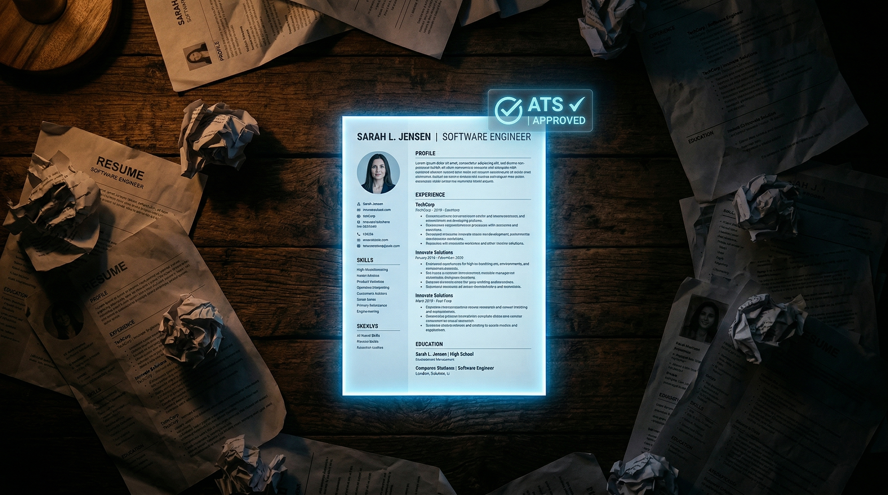

ResumeQuick: How We Built an AI Resume Builder Used by 2,000+ People in 12 Languages

Before any great campaign, there is a document that determines everything: the battle plan. In the modern career, that document is the resume. It is the single scroll that decides whether you are granted an audience or dismissed at the gate. And yet most people craft theirs the way a conscript sharpens a sword — poorly, slowly, and with no understanding of the fight ahead.
The typical resume takes 3-5 painful hours. Outdated templates from Google. No knowledge of whether the final product will survive an ATS filter. Hours of labor. No guarantee of passage.
ResumeQuick obliterates this inefficiency. Describe your experience in plain language — the way you would tell a trusted advisor about your career. The AI forges a polished, ATS-optimized resume in under 2 minutes.
But we did not stop at forging a single weapon. ResumeQuick is a complete war council for your career.
The Core Idea: Your Profile Is the Command Center
Most resume builders are transactional: upload info, generate PDF, done. A single skirmish with no lasting strategy. You never return.
ResumeQuick is different. When you create your profile, it becomes a living strategic document that powers every operation in your career campaign:
Resume Generation — Tailored Weapons for Each Battle
Your profile feeds the AI, which generates targeted resumes for specific roles. Applying for a frontend developer position? The AI emphasizes your React experience and minimizes the backend work. Applying for a tech lead role? The AI restructures everything around leadership and architecture.
Same dossier, different emphasis, different weapon. Each one precision-forged for the specific engagement. All ATS-optimized.
Job Matching — Choosing Your Battles
The wise commander does not fight every battle — only the ones worth winning. The AI analyzes job postings against your profile and scores them by fit: skills match, experience level, location compatibility, salary alignment. Instead of scrolling through hundreds of irrelevant listings, you see the 10-20 that are genuinely worth applying to.
Mock Interviews — Training Before the Engagement
No army enters battle without drilling. The AI acts as an interviewer for your target role:
“Tell me about a time you had to deal with a production outage.”
“How would you design a messaging system for 10 million users?”
“Walk me through your most impactful project.”
After each answer, the AI provides feedback: what was strong, what was missing, how to improve. A personal drill instructor available 24/7.
Career Planning — The Long Campaign
Based on your current skills, experience, and goals, the AI maps potential career paths:
- “You’re 2 skills away from a Staff Engineer position: distributed systems and team leadership”
- “Data Engineering is a natural pivot from your backend experience — here’s what you’d need”
- “Your ML coursework + your domain expertise in healthcare = a strong AI/Healthcare niche”
Career Chat — The War Room Advisor
Ask anything about your career and get personalized advice based on your full profile:
- “Should I take this job offer?” → analysis based on your career trajectory
- “How do I negotiate a higher salary?” → advice based on your experience level and market
- “What should I learn next?” → recommendations based on your gaps and goals
ATS Optimization: Breaching the Invisible Gate
Here is the statistic that changes everything: 75% of resumes are rejected by ATS before a human ever sees them. Not because the candidate is unqualified — because the resume is not formatted for machine parsing.
Common ATS failure points:
- Tables and columns — most ATS parsers cannot read multi-column layouts
- Graphics and icons — invisible to parsers
- Headers in text boxes — parsed as floating text, not structured sections
- Missing keywords — the role asks for “project management” but you wrote “managed projects”
ResumeQuick generates resumes that breach this wall:
- Single-column layout (ATS-safe)
- Properly structured with standard section headers (Experience, Education, Skills)
- Keyword-optimized for your target role
- Clean PDF output that parses correctly in every major ATS (Workday, Greenhouse, Lever, iCIMS)
We have tested our output against the top 10 ATS platforms. Parse rate: 98%+.
12 Languages
ResumeQuick supports: English, Russian, German, French, Spanish, Portuguese, Chinese, Japanese, Korean, Arabic, Hindi, and Turkish.
This is not mere translation. Each language version follows local resume conventions:
- US/UK: single page preferred, no photo, informal tone
- Germany: photo expected, date of birth included, formal structure
- Japan: specific format (rirekisho), photo required, chronological order
- Middle East: multi-page OK, personal details included
The AI knows the conventions and generates accordingly. Adapt to the terrain, or the terrain defeats you.
Growth and Metrics
| Metric | Value |
|---|---|
| Total users | 2,000+ |
| Languages supported | 12 |
| Platforms | Web app + Telegram bot |
| Growth channel | Organic (word of mouth) |
| Repeat usage rate | 40%+ (users return to generate role-specific versions) |
We have not spent a dollar on marketing. Every user came through organic search, word of mouth, or social shares. When a weapon is sharp enough, soldiers recommend it to each other.
Technical Stack
- Backend: Python 3.12, FastAPI, aiogram 3 (Telegram), PostgreSQL, Redis
- Frontend: Next.js 15, React 19, TypeScript, Tailwind v4, shadcn/ui
- AI: Google Gemini
- i18n: Custom implementation supporting 12 languages with locale-specific formatting
Frequently Asked Questions
Is it free?
Basic resume generation is free. Advanced features (mock interviews, career planning, job matching) require a premium account.
Can I edit the generated resume?
Yes. The AI generates a first draft; you can edit any section before downloading.
What format is the output?
PDF (ATS-optimized) and plain text. Both designed for maximum ATS compatibility.
How is this different from ChatGPT for resumes?
ChatGPT generates generic resumes from generic prompts. ResumeQuick uses your structured profile, understands ATS requirements, follows locale-specific conventions, and provides an entire career ecosystem — not just a document.
Can I generate multiple resumes for different jobs?
Yes — that’s the core use case. One profile, multiple targeted resumes for different applications.
See also:
- Cream Mic: AI Desktop Assistant That Listens, Sees, and Answers
- Pickachu Bot: Profitable Telegram Image Editor with Gemini 3 Pro
- What Is NeCL? AI Engineering for SaaS
Build your first resume in 2 minutes
Describe yourself, get an ATS-optimized resume. Free to start.
Try ResumeQuick